Hoy es un día supeeer especial
El día de hoy quiero celebrar a una persona maravillosa.
¡Feliz Cumpleaños mi Lau! Agradecida con la vida por haberte conocido y hoy le agradezco a la vida por regalarte un año más de vida. Eres muy increíble y ojalá nada te haga dudar de eso.
Nuestros recuerdos ♡
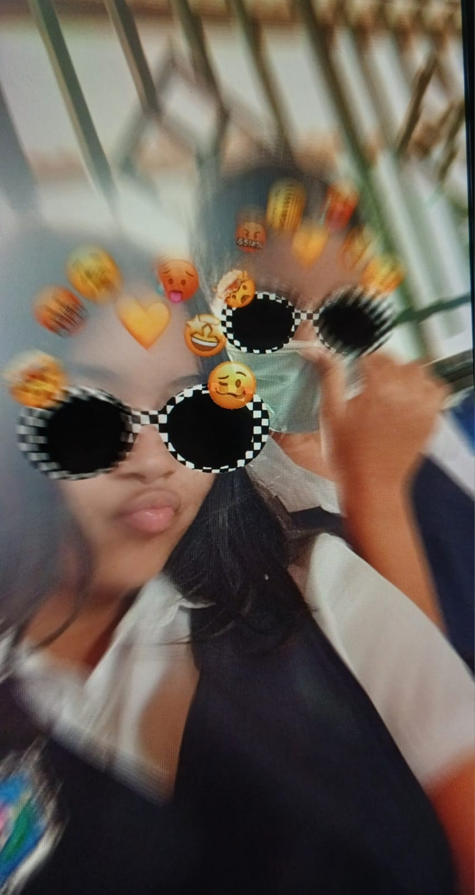
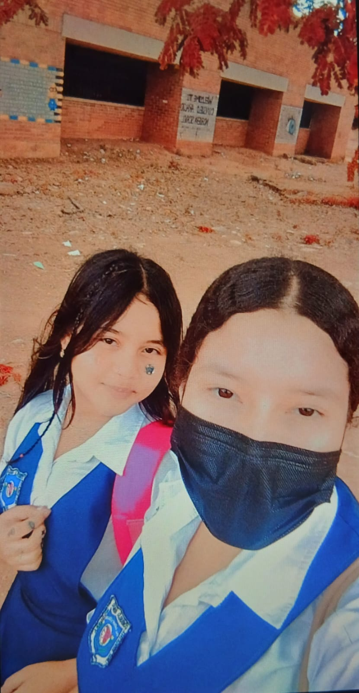
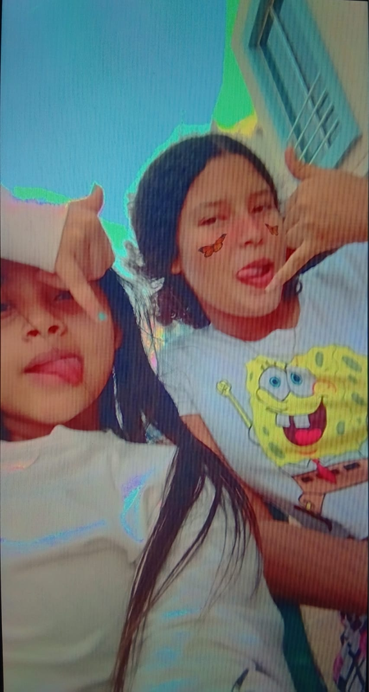
Ahh, cuando miro estas imágenes, solo puedo recordar aquel día en el que esta bella amistad comenzó por una silla. ¡Bendita sea la silla que unió esta amistad! Si volviera atrás, me volvería a sentar en esa misma silla para ser tu amiga nuevamente.
Momentos especiales ✨
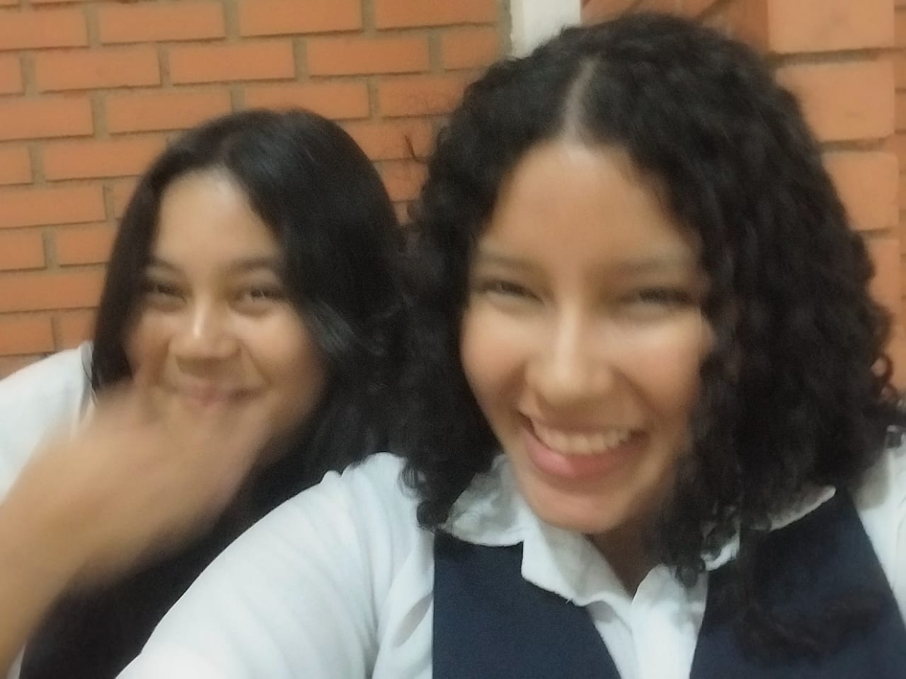
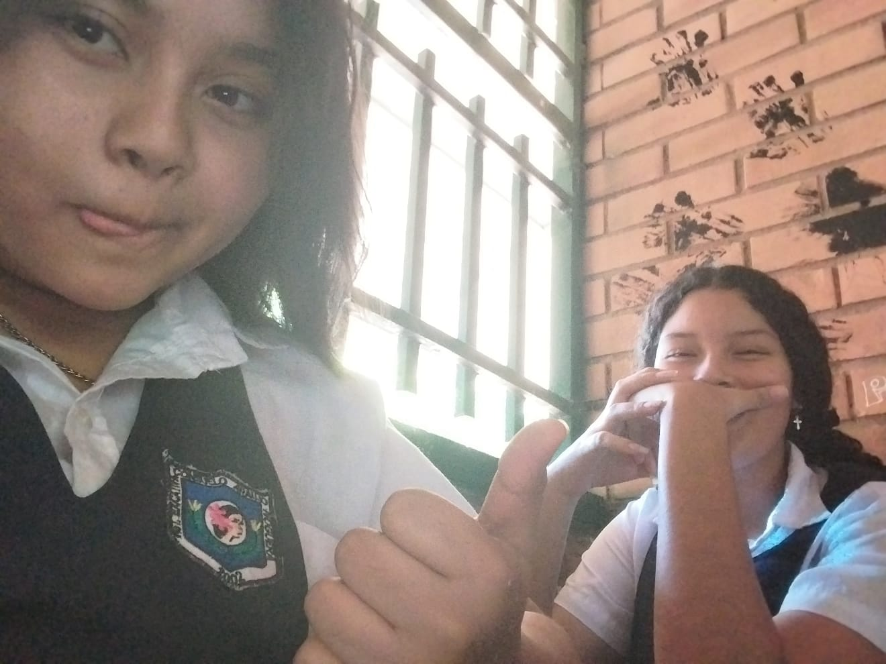
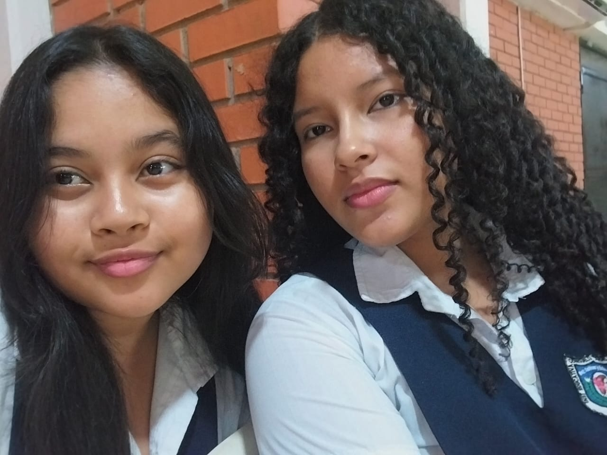
Hay muchas cosas lindas que decir, comenzando por agradecerte por haber hecho de la etapa colegial una de las mejores etapas de mi vida. No amo ni extraño el colegio; extraño estar sentada contigo en las últimas filas, riéndonos de todo. No sé cómo agradecerte por haberme regalado uno de los recuerdos más lindos de mi vida durante esos años.
Pequeños momentos en video 🎬
Hay momentos que merecen ser recordados una y otra vez. No sabes lo feliz que soy compartiendo contigo momentos, risas, tristezas, sabiduría y tantas cosas más. Eres la definición de que compartir la vida con alguien puede ser INEFABLE. ♡
Una colección de recuerdos 🌷
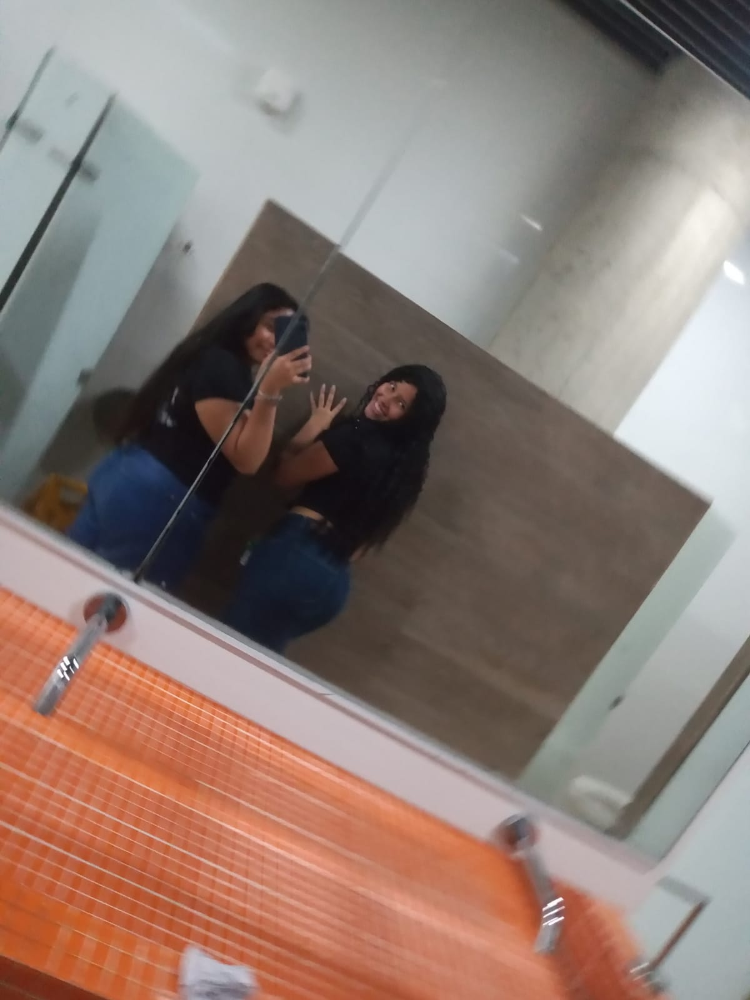
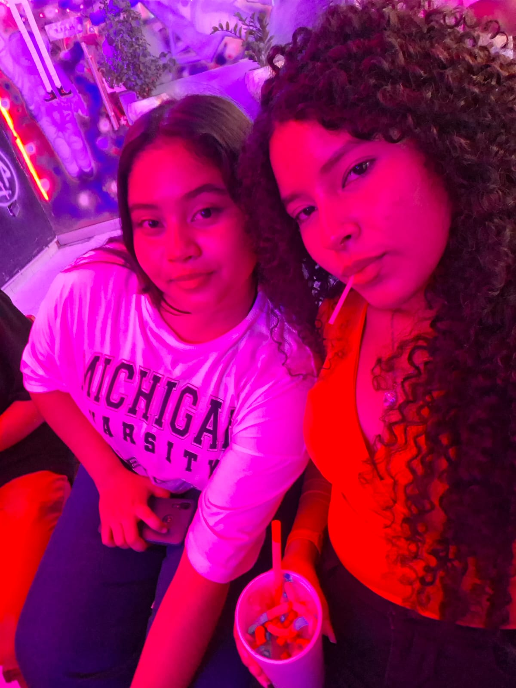
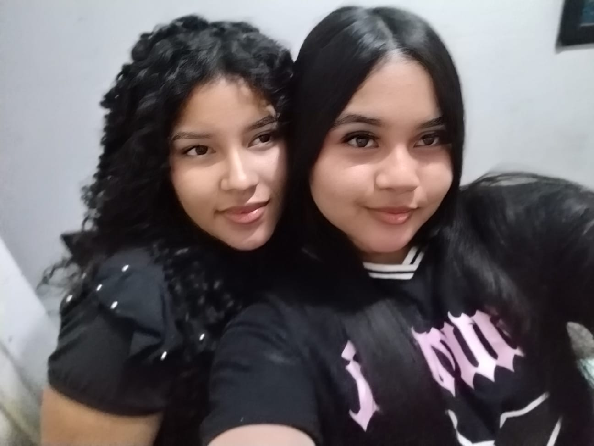
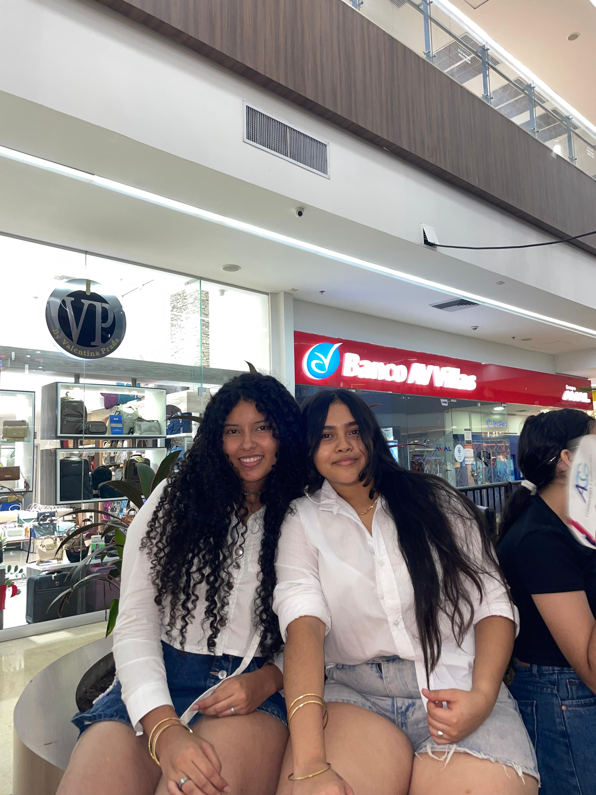
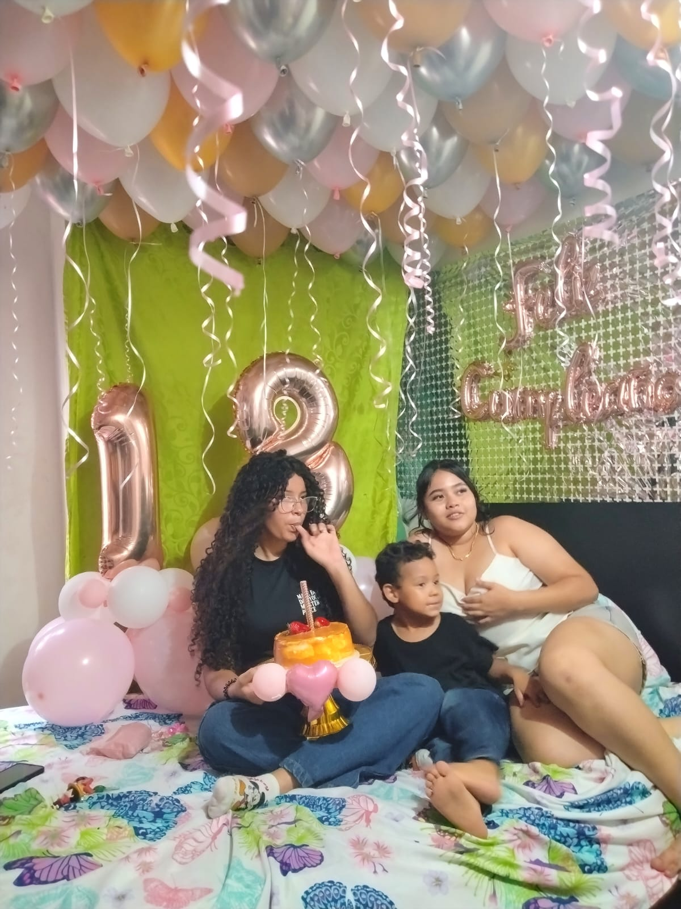
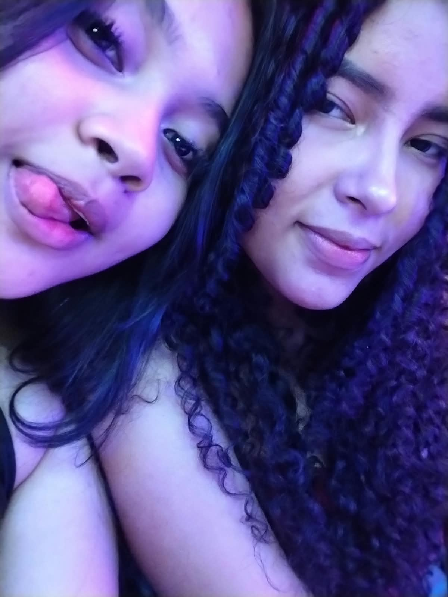
Eres una chica increíble, guerrera y con un corazón noble. No necesito mucho para que nuestros momentos y salidas sean especiales e inolvidables, solo necesito que estés ahí; con eso es más que suficiente. Sabes que el día que alguien te haga sentir menos o que no eres increíble, me dices quién es y lo mandamos a bajar JAJAJAJA. No sé qué sería de aquellos días si no estuvieras. Me siento súper feliz y agradecida con la señorita Sandy por haberte traído al mundo, con el señor Jorge por ser para ti el papá que necesitas, con la señora Martha por criar a la increíble chica que eres y con el señor Eduardo por también haberte criado y ser una excelente figura paterna. Quiero decirles que hicieron un gran trabajo contigo. Gracias por guiarte para ser quien hoy eres. ♡
Para ti, Laurys 💌
Mi querida Laurys:
Hoy quiero recordarte lo importante que eres y lo agradecida que estoy de tenerte en mi vida. Gracias por cada recuerdo, cada conversación y cada momento compartido. Quiero decir que haber elegido la luna para representar nuestra amistad es de las cosas más lindas e increíbles. Porque eres tú aquella luz que brilla en mi oscuridad. Es una representación simbólica de que, incluso en los tiempos de tinieblas, siempre llega la bella y hermosa luz de la luna.
Deseo que esta nueva vuelta al sol esté llena de oportunidades, alegrías y sueños cumplidos. Nunca olvides lo increíble que eres. Estaré feliz por tus triunfos, grandes o pequeños, porque tu alegría también es la mía. Si estás triste o decaída, también estaré contigo y buscaré la forma de levantarte los ánimos. Quiero compartir contigo cada sentimiento, sin importar cuál sea. Estaré para ti cuando me necesites y no dudes en contar conmigo para lo que necesites. Si puedo dártelo, lo haré, y si no puedo, buscaré la forma de hacerlo. Te quiero demasiadooo y espero que nunca dudes de eso.
Con muchísimo cariño, Nata ♡